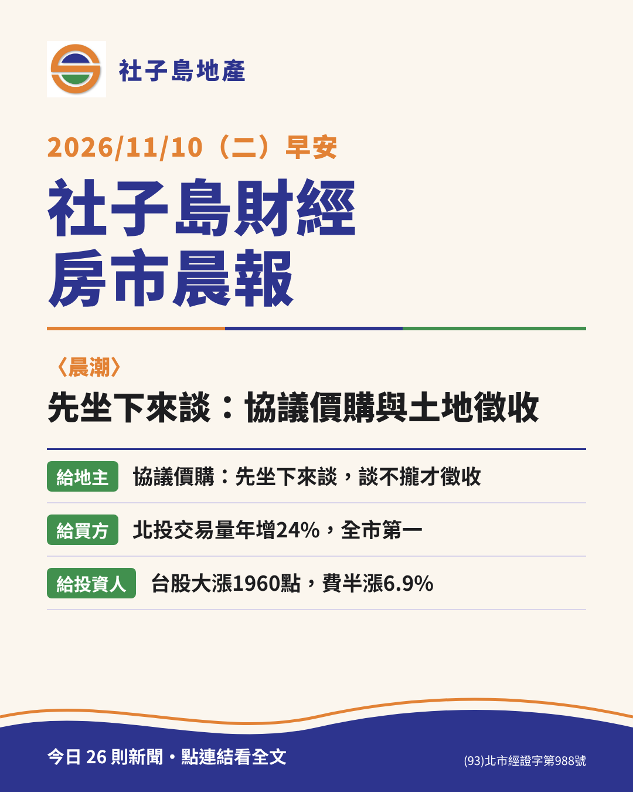

2026/11/10 (二) 早安
社子島財經房市晨報｜先坐下來談：協議價購與土地徵收
今日 26 則財經與房市新聞，依主題分成 9 類，社子島、主商圈與台北市的新聞排在最前面。點標題就能開啟原文。
〈潮汐表〉今天的三道潮水
- 給地主協議價購是徵收前的必經程序：可以談、也可以不簽，談不攏才報請徵收；協議價購和徵收補償，都以市價為準。
- 給買方北市前10月買賣移轉年增5.7%，北投受輝達帶動年增24.1%居全市之冠，大安、信義反而衰退。
- 給投資人國安基金與限空令首日，台股收漲1,960點；美股週一反彈、費半漲6.9%，輝達逆勢跌4.27%。
〈晨潮〉
先坐下來談：協議價購與土地徵收
前天在淡水河邊，阿公問我們：「若是地租予人種菜，以後徵收的時陣，租的人敢會分去一份補償？」先簡單回答：要看是不是「耕地租約」。依《平均地權條例》第11條，徵收的土地如果是出租耕地，除了政府補償承租人改良土地的費用和還沒收成的農作物，地主還要從補償地價扣掉土地增值稅後的餘額，拿出三分之一補償承租人。不過，依司法院釋字第208號解釋，這裡的承租人，是指承租耕地、實際自己耕作的自然人或合作農場，而且租約要依法存在。鄰居借地種種菜、沒有耕地租約，通常不在這一條裡；個案是否適用，請以地政機關認定為準。
今天〈晨潮〉，談一個很多地主問過、卻常常聽不清楚的題目：協議價購與土地徵收。很多人以為政府要用地，就是一紙公文直接徵收。其實不是。依《土地徵收條例》第11條，需用土地的機關在申請徵收之前，應該先和所有權人協議價購，或用其他方式取得；所有權人拒絕參與協議，或開會後談不成，才可以依法申請徵收。說白一點，就是「先禮後兵」：先坐下來談，談不攏，才走徵收。
協議價購和徵收，差在哪裡？第一，性質不同。協議價購是雙方坐下來、你情我願簽的約；徵收則是政府依法作成的決定，報內政部核准、公告之後，地主不同意也一樣進行。第二，順序不同。依規定，協議價購之前通常要先開公聽會，把為什麼要用這塊地、範圍有多大說清楚，再請地主來協議。
第三，價格其實是同一把尺。民國101年《土地徵收條例》修法後，徵收補償改按市價，協議價購同樣依市價，由不動產估價師依《土地徵收補償市價查估辦法》查估。臺北市地政局的研究就指出，市價徵收上路後，臺北市協議價購成功的比例由17.39%提高到63.08%；談不成的，很多是祭祀公業、水利會土地，或是還沒辦繼承。所以，地主可以談、可以提意見，也可以不簽；不簽並不會被「懲罰」，只是程序進入徵收，補償仍是市價。
協議價購 vs 土地徵收，四個差別
- ① 順序：先協議價購，談不成才申請徵收（《土地徵收條例》第11條）。
- ② 性質：協議價購是雙方簽約；徵收是政府依法核准、公告的決定。
- ③ 價格：兩者都以市價為準，由估價師依《土地徵收補償市價查估辦法》查估。
- ④ 社子島多一個選項：區段徵收可選現金補償或抵價地；簽了協議價購，就是把地賣給政府。
稅的部分，財政部曾以函釋說明，依市價協議價購的土地，可以適用免徵土地增值稅的規定。不過每一筆土地的情形不同，實際能不能免、怎麼申報，請以稅捐機關的認定為準。
回到社子島。社子島走的是區段徵收，和一般徵收不一樣的地方在於：被徵收的地主，除了領現金補償，還可以申請領回抵價地——這是我們11/4到11/9連著幾天談過的事。也因此，地主面對的不只是「賣不賣」，而是「拿現金，還是拿回土地」。如果選擇協議價購，土地就是賣給政府，之後自然不會再有領抵價地這個選項，這一點務必先想清楚。社子島的區段徵收計畫，目前仍在內政部審議；協議價購會不會辦、什麼時候辦，我們沒有查到公開的說明，就不在這裡猜，一切以市府正式通知為準。
每一家的土地、持分、繼承狀況都不一樣，這不是一篇文章能替您決定的事。真的收到通知，先別急著簽，也別急著拒絕，把資料整理好，找信任的人一起看。往下滑，還有北市前10月交易量、國安基金首日行情與地價稅的提醒；最後在〈廟口泡茶區〉，我們等您來電聊聊。
——社子島地產團隊
主商圈：社子島・北士科・關渡洲美平原1 則
社子島本週無新進度：區段徵收計畫仍在內政部審議、尚未核定公告；北士科效應反映在北投交易量，北投前10月買賣移轉年增24.1%、全市成長率第一；關渡洲美平原無新進度
台北市3 則
北市前10月買氣年增5.7%但區域分化，大安、信義交易量下滑；第3季預售建案申報量較上季增15%；信義區捷運環狀線Y39站開發區11/3公告徵收、12/11發放補償費
市地重劃・區段徵收1 則
彰化縣今年第2次農地重劃區抵費地標售，11/23開標
利率・房貸・資金2 則
青安3.0育兒家庭最高可貸1,500萬元，但銀行仍看收入與負債比；申貸戶數較前一版少近2成
房市走向4 則
交屋潮遇上推案降溫，交屋方資金壓力受關注；台中預售出現每坪20.9萬元交易；板橋江翠北側沉寂近一年後兩新案登場；高雄楠梓預售房價5年近翻倍
土地・法拍1 則
高雄鼓山豪墅將於12/9法拍，一拍底價較昔日開價少9,300萬元
都更・合建2 則
永和頂溪公辦都更A區11/3簽約；都更危老增加，鄰損案件頻繁，專家教先自保
稅務與法律實務6 則
地價稅繳到11/30：多筆土地採總歸戶只開一張單；買賣交屋後地價稅依契約分算；成年子女也可能再適用一處自用住宅稅率；簡易房屋課稅現值可減；賣房虧錢仍要申報房地合一稅
今日財經大事6 則
國安基金與限空令首日，台股收漲1,960點、史上第二大，外資仍連8日賣超；美股週一全面反彈、費半漲6.9%，輝達逆勢跌4.27%、台積電ADR漲3.51%；美國10月CPI今晚公布
〈阿公講古〉
週二午後，阿公沿著基隆河走，河面上有人划著獨木舟，對岸的高樓一棟一棟立起來。
「先禮後兵，這款道理阮知，」阿公點點頭：「以前庄裡欲開路，嘛是先請人來泡茶、講清楚，講無好勢才去公所。」
他說，人坐落來講，話就會軟；一紙公文寄來，心就會硬。
走到堤邊，阿公想起昨天有個少年家來敲門，說要跟他簽「合建」，等以後分到抵價地再一起蓋房子。阿公搔搔頭：「地猶未徵收，就欲佮人簽合建，這款約敢會使簽？愛注意啥物？」
阿公的問題，我們明天回答。
〈廟口泡茶區〉
阿公從基隆河邊走回廟口，榕樹下的茶已經泡好了。收到協議價購的通知、或是家裡的地有人在租，都可以先坐下來慢慢說。
土地出租，租金只是一半，另一半是租約：用途、期限、遇到徵收怎麼辦，我們陪您一條一條寫清楚。
想問問您：如果有一天收到協議價購的通知，您最想先弄清楚的是哪一件事？打個電話告訴我們，我們把大家最在意的問題整理出來。
不急著成交。我們是守在堤邊的人，守著每一塊土地的權益，直到把它交到願意耕耘它的人手上。
📞 歡迎先來電 0922-252-969先通個電話聊聊，再約時間來廟口喝茶。
 掃描 QR code，加 LINE 好友LINE ID：@shezidao💬 加 LINE
掃描 QR code，加 LINE 好友LINE ID：@shezidao💬 加 LINE
社子島地產團隊｜service@shezidao.com.tw
台北市士林區延平北路九段288號
週一至週六 9:30–18:00（週四 9:30–13:30），週日公休📞 來電 0922-252-969
本站由社子島地產開發有限公司經營，為民間不動產資訊網站，非臺北市政府官方網站；政府公告請以臺北市政府與地政局網站為準。
本期新聞由社子島地產團隊自鉅亨網、自由時報、安傳媒、住展雜誌、蕃新聞、工商時報、ETtoday房產雲、鏡週刊、民視新聞網、聯合新聞網、經濟日報、公視新聞網、ETtoday財經雲、優分析 等媒體收集，標題照原文，點擊即可開啟原始報導；法規說明僅供參考，實際權利義務以主管機關公告為準。〈晨潮〉〈阿公講古〉為本團隊之參考意見，不構成投資建議，亦不代表支持任何候選人。〈阿公講古〉的阿公，是我們依島上長輩的身影寫成的人物。